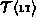

Data Structures and Algorithms
with Object-Oriented Design Patterns in Java
Data Structures and Algorithms
with Object-Oriented Design Patterns in Java
Given a sorted array of items,
an efficient way to locate a given item
is to use a binary search .
The findOffset method of the SortedListAsArray class
defined in Program  uses a binary search
to locate an item in the array which matches a given item.
uses a binary search
to locate an item in the array which matches a given item.
Program: SortedListAsArray class findOffset method.
The binary search algorithm makes use of a search interval to determine the position of an item in the sorted list. The search interval is a range of array indices in which the item being sought is expected to be found. The initial search interval is . The interval is iteratively narrowed by comparing the item sought with the item found in the array at the middle of the search interval. If the middle item matches the item sought, then we are done. Otherwise, if the item sought is less than the middle item, then we can discard the middle item and the right half of the interval; if the item sought is greater than the middle item, we can discard the middle item and the left half of the interval. At each step, the size of the search interval is approximately halved. The algorithm terminates either when the item sough is found, or if the size of the search interval becomes zero.
In the worst case,
the item sought is not in the sorted list.
Specifically, the worst case occurs when the item sought is smaller
than any item in the list because this case requires
two comparisons in each iteration of the binary search loop.
In the worst case, iterations are required.
Therefore, the running time of the findOffset method is
,
where  and TGT represents the running times required to compare
two Comparable object instances.
If we assume that and ,
then the total running time is simply  ,
where
,
where  .
.
 Copyright © 1998 by Bruno R. Preiss, P.Eng. All rights reserved.
Copyright © 1998 by Bruno R. Preiss, P.Eng. All rights reserved.